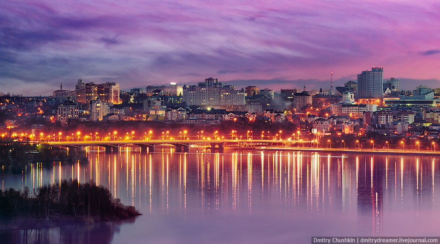

Воронеж
Воро́неж — город в России, административный центр Воронежской области. Расположен на берегах реки Воронеж, в 12 километрах от её впадения в Дон; расстояние от Москвы — около 520 км. Население города Воронежа по состоянию на 1 января 2019 года составляет 1 054 111 человек. Вокруг Воронежа образовалась агломерация с численностью населения более 1,3 млн человек. Образует административно-территориальную единицу и муниципальное образование городской округ город Воронеж с единственным населённым пунктом в его составе.

Воронеж считается колыбелью русского регулярного (государственного) военно-морского флота и родиной воздушно-десантных войск.
Город Воронеж расположен в европейской части России на границе Среднерусской возвышенности и Окско-Донской равнины между 51° 29’ (сады южнее посёлка имени Будённого) и 51° 54’ северной широты (кордон Чистый); и 39° 01’ (восточнее Тенистого) и 39° 40’ (Толши) восточной долготы. В природном отношении город располагается на юге среднерусской лесостепи. Воронеж находится на левом и правом берегах реки Воронеж, в 12 км от её впадения в реку Дон, в 463 км в юго-юго-восточном направлении от Москвы.